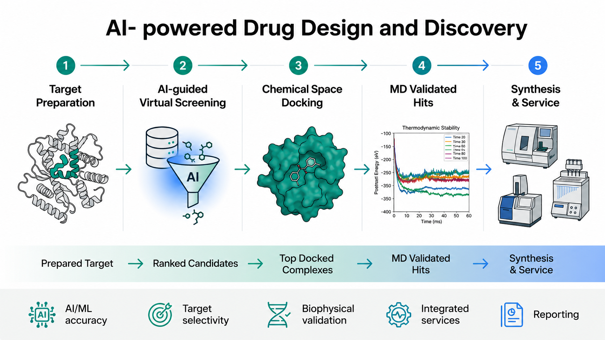
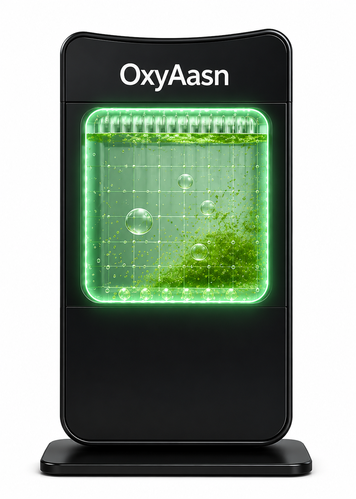

Bharat Biosense Private Limited is a deep-technology life sciences company at the nexus of biotechnology, artificial intelligence, and molecular science.
Founded with a mission to build India's indigenous capability in advanced life sciences, we engineer solutions that span the full continuum — from computational drug discovery and stable isotope production to algal biotechnology and precision diagnostics.
Our platforms are designed to serve pharmaceutical companies, research institutions, hospitals, and government bodies — delivering scientific rigour, regulatory confidence, and transformative outcomes at global standards.
Each vertical is a self-sustaining science platform — engineered for depth, designed for scale, united by a single data and intelligence layer.
Artificial Intelligence
01
AI Drug Design & Discovery
Deploying transformer-based large biological models, generative AI, and physics-informed neural networks for de novo drug design, protein structure prediction, and multi-omics data integration.
Generative molecular design
Protein structure & function prediction
Multi-omics AI integration
Computational toxicology & ADMET
Molecular Science
02
BioIsotope
Built on rigorous scientific research, our integrated production platform transforms stable isotopes into high-purity research compounds through precision bioprocessing, analytical validation, and scalable manufacturing.
¹³C, ¹⁵N, ²H stable isotope production
Isotope-labelled pharmaceuticals
NMR-grade purity standards
Metabolic tracer synthesis
B2C & B2B Products
03
BioLiving
Nature-science products for homes, offices and commercial spaces — harnessing algal biotechnology and plant intelligence to create clean air, sustainable wellness, and eco-smart environments.
OxyAasn photobioreactor systems
OxyNeem botanical formulations
Microalgae-based consumer wellness
Commercial & institutional solutions
Vertical 01 — AI Drug Design & Discovery
AI-Powered End-to-End Drug Discovery Pipeline
From target identification to experimentally validated hits — our integrated AI and biophysical pipeline compresses drug discovery timelines from years to months.
AI-POWERED END-TO-END DRUG DISCOVERY PIPELINE

01
Target Preparation
3D homology modelling & active site identification from sequence to structure.
Output:3D-protein structures with identified active sites
02
AI-Guided Virtual Screening
Binding affinity ranking via transformer-based AI models across millions of compounds.
Output:Ranked list of high affinity candidates
03
Chemical Space Docking
Inhibitors docked against validated targets to produce top-ranked binding complexes.
Output:Best docked complex poses
04
Validation via MD Simulation
High-rank complexes subjected to molecular dynamics for thermodynamic stability assessment.
Output:Validated stable hits with favourable thermodynamics
05
Biophysical Studies & Custom Services
Protein synthesis, binding assays, ADMET prediction and preclinical development support.
Output:Experimentally validated hits & preclinical dev. support
Living products powered by algal biotechnology and botanical science — bringing nature's intelligence to homes, offices, schools and commercial environments.

OxyAasn by Bharat Biosense — BioLiving
Algae-Powered Air Regeneration — Nature's Engine, Engineered.
OxyAasn photobioreactors cultivate living microalgae within sleek, purpose-built enclosures. The algae continuously absorb CO₂ and emit fresh oxygen through photosynthesis, turning any room into a self-sustaining microenvironment. Designed for Homes, Offices, Schools and Public Spaces.
An Interconnected Ecosystem Where Biology Meets Intelligence
A unified platform architecture where AI accelerates biology, biology validates models, and molecular science provides the measurable ground truth.
BIOSENSE PLATFORM
Artificial Intelligence
Transformer models, graph neural networks & generative AI trained on biological data
LLM-BioGNNGenAI
Biology
Genomics, proteomics, cell biology & metabolomics integrated into a unified biological intelligence layer
GenomicsProteomicsCRISPR
Molecular Science
Stable isotopes, NMR spectroscopy, structural biology & mass spectrometry grounding every insight in physical reality
NMRMSIsotopes
⟳
Closed-loop feedback between AI predictions and wet-lab validation
⊕
Single data infrastructure across all three scientific domains
◈
Modular APIs allowing integration with partner pipelines
Featured Technologies
Scientific Capabilities at the Frontier
Three core technology platforms driving our research, product development, and collaborative innovation programs.
AI Platform
AI Drug Discovery
Generative molecular design and multi-parameter optimisation using physics-aware deep learning architectures. Reduce discovery timelines from years to months.
Stable Isotopes
Carbon-13 Production
Algae-based biosynthesis of ¹³C-labelled compounds for NMR spectroscopy, metabolic flux analysis, and pharmaceutical tracer development.
Biotechnology
Algal Biotechnology
High-density photobioreactor cultivation, strain optimisation via adaptive laboratory evolution, and scalable downstream processing of microalgal biomass.
Four defining attributes that distinguish us from every other life sciences company in the country — and most in the world.
0
Research Programs
0
Science Verticals
0%
Isotope Purity
01
Research Driven
Every product and platform emerges from rigorous peer-reviewed science. We publish openly, collaborate widely, and build IP that lasts decades — not quarters.
02
Integrated Platform
Our AI, biology, and molecular science layers communicate continuously — meaning predictions get validated experimentally, and experiments inform better models in a closed loop.
03
Indigenous Innovation
India's first integrated stable isotope and AI drug discovery platform — reducing dependence on imports, building sovereign capability, and generating high-value exports.
04
Sustainable Technologies
Photosynthesis-driven production routes, circular bioeconomy principles, and life-cycle-optimised manufacturing — delivering science without compromising the planet.
Let's Collaborate
Let's Build the Future of Bio-Intelligence Together
Whether you're a pharmaceutical company seeking an AI drug discovery partner, a research institute in need of stable isotopes, or an investor looking at the next frontier of life sciences — we'd like to hear from you.